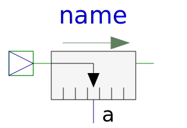

This package contains ideal sensor components that provide the connector variables as signals for further processing with the Modelica.Blocks library.
| Name | Description |
|---|---|
| Ideal sensor to measure the absolute position | |
| Ideal sensor to measure the absolute velocity | |
| Ideal sensor to measure the absolute acceleration | |
| Ideal sensor to measure the relative position | |
| Ideal sensor to measure the relative speed | |
|  RelAccSensor | Ideal sensor to measure the relative acceleration |
| Ideal sensor to measure the force between two flanges | |
| Ideal sensor to measure the power between two flanges (= flange_a.f*der(flange_a.s)) | |
| Ideal sensor to measure the absolute velocity, force and power between two flanges |